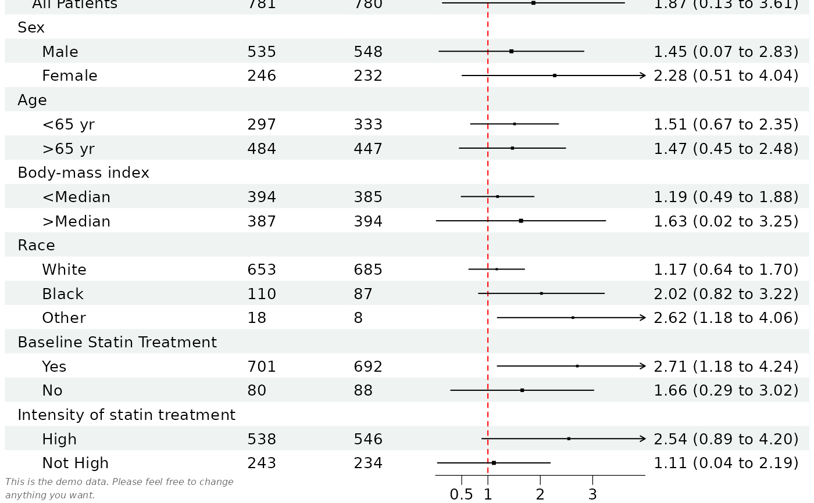

A data frame will be used for the basic layout of the forest plot.
Graphical parameters can be set using the forest_style
function.
forest draws the table and the confidence intervals. The other parts
of the plot are added with functions that take the plot as their first
argument, so they can be chained with the pipe |>:
set_xaxisLimits, tick marks and scale of the x-axis, and vertical linesset_labsTitle, x-axis labels, footnote, arrow labels and legend labelsscale_sizesPoint sizes scaled by study weightsset_styleGraphical parameters
These functions build the plot again, so they must be used before the plot
is edited with edit_plot, add_text,
insert_text, add_border or
add_grob. The plot stays a gtable at
every step, and can be combined with other plots, e.g. with
patchwork::wrap_elements.
Usage
forest(
data,
est,
lower,
upper,
sizes = 0.4,
ref_line = NULL,
ci_column,
is_summary = NULL,
nudge_y = 0,
fn_ci = makeci,
fn_summary = make_summary,
index_args = NULL,
style = NULL,
...
)Arguments
- data
Data to be displayed in the forest plot
- est
Point estimation. Can be a list for multiple columns and/or multiple groups. If the length of the list is larger than then length of
ci_column, then the values reused for each column and considered as different groups.- lower
Lower bound of the confidence interval, same as
est.- upper
Upper bound of the confidence interval, same as
est.- sizes
Size of the point estimation box, can be a vector or a list. The value is a multiple of one line of text, so
1draws a point as tall as thebase_sizeof the theme. The same scale applies to the summary diamond. Values are used as they are, unlessscale_sizesis used to read them as study weights; useful values are roughly between0.2and1.5, and a warning is given when the plot is drawn if they are outside0.1to2.- ref_line
X-axis coordinates of the reference line, the value of no effect. If
NULL(default), it is 1 if the x-axis is on a log scale (seeset_xaxis) and 0 otherwise. Provide an atomic vector if different reference line for eachci_columnis desired.- ci_column
Column number of the data the CI will be displayed.
- is_summary
A logical vector indicating if the value is a summary value, which will have a diamond shape for the estimate. With multiple groups the diamonds are stacked in the same cell and the summary rows are made taller to fit them, so a larger
nudge_ymay be wanted.- nudge_y
Vertical adjustment to nudge groups by, must be within 0 to 1. Defaults to
0; for grouped forest plots a value of0is bumped to0.1automatically so that group CIs do not overplot. Set explicitly to override.- fn_ci
Name of the function to draw confidence interval, default is
makeci. You can specify your own drawing function to draw the confidence interval, but the function needs to accept arguments"est", "lower", "upper", "sizes", "xlim", "pch", "gp", "t_height", "nudge_y". Please refer to themakecifunction for the details of these parameters.- fn_summary
Name of the function to draw summary confidence interval, default is
make_summary. You can specify your own drawing function to draw the summary confidence interval, but the function needs to accept arguments"est", "lower", "upper", "sizes", "xlim", "gp". Please refer to themake_summaryfunction for the details of these parameters.- index_args
A character vector, name of the arguments used for indexing the row and column. This should be the name of the arguments that is working the same way as
est,lowerandupper. Check out the examples in themake_boxplot.- style
Style of the forest plot created with
forest_style. A theme created with the supersededforest_themeis also accepted. The style can also be set or changed later withset_style.- ...
Other arguments passed on to the
fn_ciandfn_summary, or named inindex_args. An argument none of them takes gives an error, as it would not be used. The arguments of earlier versions are also accepted here, with a message the first time each of them is used in a session: useset_xaxisinstead ofxlim,ticks_at,ticks_digits,ticks_minor,x_transandvert_line,set_labsinstead ofarrow_lab,xlab,titleandfootnote, andstyleinstead oftheme.
Value
A forest plot object, a gtable of class
forestplot.
Examples
library(grid)
# Read provided sample example data
dt <- read.csv(system.file("extdata", "example_data.csv", package = "forestploter"))
# Keep needed columns
dt <- dt[,1:6]
# indent the subgroup if there is a number in the placebo column
dt$Subgroup <- ifelse(is.na(dt$Placebo),
dt$Subgroup,
paste0(" ", dt$Subgroup))
# NA to blank or NA will be transformed to carachter.
dt$Treatment <- ifelse(is.na(dt$Treatment), "", dt$Treatment)
dt$Placebo <- ifelse(is.na(dt$Placebo), "", dt$Placebo)
dt$se <- (log(dt$hi) - log(dt$est))/1.96
# Add blank column for the forest plot to display CI.
# Adjust the column width with space.
dt$` ` <- paste(rep(" ", 20), collapse = " ")
# Create confidence interval column to display
dt$`HR (95% CI)` <- ifelse(is.na(dt$se), "",
sprintf("%.2f (%.2f to %.2f)",
dt$est, dt$low, dt$hi))
# Define a style
st <- forest_style(base_size = 10,
ref_line = gpar(col = "red"),
footnote = gpar(col = "#636363", fontface = "italic"))
# Draw the plot and add the axis and labels with a pipe
p <- forest(dt[,c(1:3, 8:9)],
est = dt$est,
lower = dt$low,
upper = dt$hi,
sizes = dt$se,
ci_column = 4,
ref_line = 1,
style = st) |>
set_xaxis(xlim = c(0, 4), ticks_at = c(0.5, 1, 2, 3)) |>
set_labs(arrow = c("Placebo Better", "Treatment Better"),
footnote = "This is the demo data. Please feel free to change\nanything you want.")
# Print plot
plot(p)
